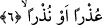

4. (Hak ile bâtılı) birbirinden iyice ayıranlara;
“Fark”, “bir şeyi ayırmak” anlamınadır.
5. (Allah’a yönelenleri) arıtmak,
“İlka” burada, “atmak” anlamına değil, “ulaştırmak ve indirmek” anlamınadır. Âyetin
sonundaki “zikran” kelimesi, “vahy” anlamınadır. Vahyin verilmesi kavramı “yayma ve
fark irâdesi” şeklinde yorumlanmıştır.
Görüldüğü üzere Allah bu ilk grup âyette işleri idâre etmek, rızıkları yerlerine
ulaştırmak, yağmurları yağdırmak, rüzgarları estirmek, kulların amellerini gece ve
gündüz yazmak, ruhları kabzetmek gibi işleri yapmak üzere gönderdiği meleklerden bir
tâifenin üzerine yemin ediyor.
“Âsıfât” kelimesi, “asfu’r-riyâh/rüzgarın esmesi”nden alınmıştır, meleklerin aldıkları
emirleri rüzgar gibi hızlıca yerine getirmelerine işâret etmektedir.
Bir de Allah, burada, aldıkları vahiylerle inerken havada kanatlarını veya dünyanın
dört bir tarafına şeriatlarını yayan, ya da hak ile bâtılın arasını ayıran ve peygamberlere
vahyi veren diğer meleklerin üzerine yemin ediyor.
6. (Kötüleri) sakındırmak için öğüt telkin edenlere;
Altıncı âyetteki “uzran” kelimesine gelince, bu kelime, “kötülüğün silinmesi”
anlamına gelen “azera” fiilinin masdarıdır. “Nuzran” ise, “enzera/korkuttu” fiilinin ism-
i masdarıdır. Ama masdar değildir.
İbn Şeyh der ki: “Zikr” kelimesi ile kasdedilen vahyin bütünü ise, bu takdirde “uzran
ev nuzran” kelimeleri bedelu’l-ba’z minel kül/bütünden bir kısmın bedel olmasıdır.
Çünkü müminin mutluluğuyla ilgili bir âyetin indirilmesi ona mâzeret verme ve günahını
silme ile aynı anlamadır. Yine kâfirin bedbahtlığı ile ilgili bir âyetin indirilmesi ise
onun kâfirliğine uyarı âyetinin indirilmesi ile aynı anlamadır.
Yukardaki “uzran ev nuzran” kelimeleri, “vahiy indirme” sıfatının sebebini bildirmek
için olabilir. Çünkü vahiy indiren melekler bunu, tevbe ve istiğfar ile Allah’tan özür
dileyen müminlerin günahlarının silinmesi, günahlarında ısrarlı olan bâtıl yola sapmış
kimselerin korkutulması için yapmaktadır.